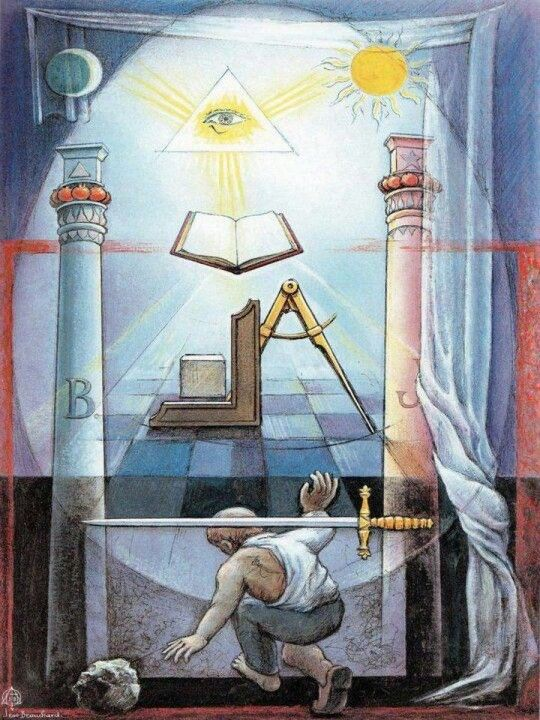
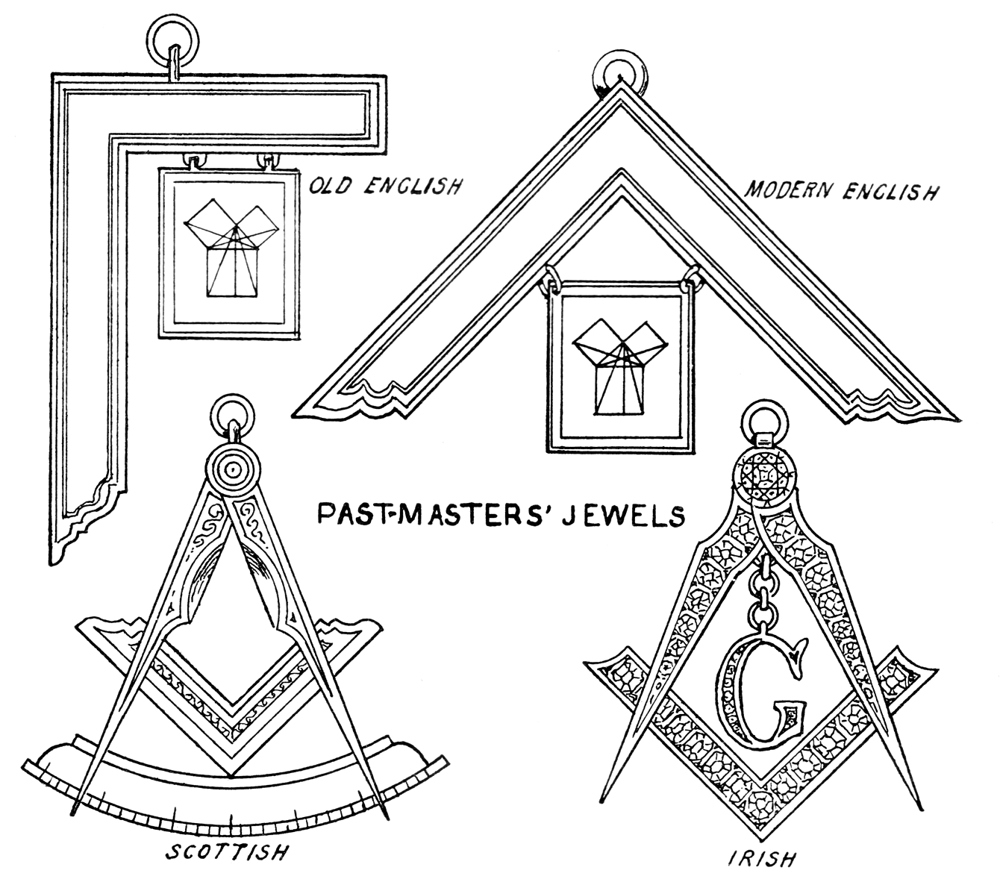

Simbolismo Maçônico
Prefácio
Os símbolos maçônicos possuem uma profunda importância dentro da Maçonaria, servindo como ferramentas de ensino e reflexão para seus membros. Utilizados durante os rituais e as instruções, os símbolos maçônicos ajudam os maçons a internalizar e vivenciar os princípios da fraternidade, da ética e do autodesenvolvimento. Além disso, esses símbolos estabelecem uma conexão histórica e filosófica, ligando os maçons modernos aos construtores medievais e a outras tradições esotéricas, fortalecendo o sentido de pertencimento e continuidade dentro da ordem.
O Sol, o Olho e a Lua com 7 Estrelas
• Sol: Representa a fonte de luz, vida e conhecimento. É um símbolo de clareza, verdade e a presença divina.
• Olho: Conhecido como o "Olho Que Tudo Vê," representa a vigilância, a consciência divina, e a presença de Deus que observa e conhece todas as ações humanas.
• Lua com 7 Estrelas: A lua simboliza a reflexão da luz (sabedoria) do sol, e as 7 estrelas representam perfeição, completude e a harmonia do universo.
Juntos, esses símbolos destacam a dualidade da luz (conhecimento e sabedoria) e a vigília contínua, com o número 7 enfatizando a ordem e a perfeição na criação.
O Livro com o Esquadro e Compasso
O livro geralmente representa as Escrituras Sagradas ou o Livro da Lei. O esquadro e o compasso são ferramentas maçônicas fundamentais.
• Escrituras Sagradas: A base moral e ética da Maçonaria.
• Esquadro e Compasso: Representam a retidão e a moralidade (esquadro) e a sabedoria e a circunscrição dos desejos (compasso). Juntos, sobre o livro, indicam que a moralidade e a sabedoria devem ser baseadas em princípios espirituais e éticos.
O Círculo com um Ponto no Meio e Duas Retas Tangentes
Um círculo com um ponto central e duas retas tangentes é um símbolo alquímico e maçônico.
• Círculo e Ponto: Representa a unidade e o princípio da criação, o ponto de origem de todas as coisas.
• Retas Tangentes: Representam as limitações e fronteiras que definem e protegem a perfeição da criação.
A Pedra com o Malho

Geralmente, uma pedra bruta com um malho ou martelo sobre ela.
• Pedra Bruta: Representa o maçom não aperfeiçoado que precisa ser trabalhado.
• Malho/Martelo: Ferramenta usada para lapidar a pedra, simbolizando o trabalho necessário para aperfeiçoar a si mesmo.
O Chão Xadrez
Um piso de mosaico em preto e branco, que representa a dualidade da existência - luz e escuridão, bem e mal. É um lembrete de que a vida é composta de opostos e que devemos encontrar equilíbrio e harmonia.
A Pedra Meio Lapidada com uma Régua
Uma pedra parcialmente trabalhada com uma régua sobre ela.
• Pedra Meio Lapidada: Representa o maçom em processo de aperfeiçoamento.
• Régua: Simboliza a medida e a disciplina necessária para se transformar e crescer.
Ferramentas
Elas são utilizadas tanto na prática ritualística quanto como metáforas para a construção do caráter e a busca pela perfeição pessoal. Através dessas ferramentas, os maçons aprendem a aplicar os princípios da moralidade, igualdade, integridade e união em suas vidas diárias, contribuindo para seu desenvolvimento espiritual e ético. Cada ferramenta, como o esquadro, o nível, o prumo e a trolha, oferece lições valiosas que guiam os membros na jornada contínua de autoconhecimento e melhoramento individual.
• Esquadro: Representa a moralidade e a virtude.
• Nível: Simboliza a igualdade e a justiça.
• Prumo: Ferramenta usada para medir a retidão vertical, simbolizando a integridade e a busca pela verdade.
• Trolha: Representa a promoção da paz e da união entre os maçons.
O Delta Luminoso (Triângulo com Olho)
Representa o "Olho Que Tudo Vê" e a presença vigilante de Deus. O triângulo simboliza a Trindade e a perfeição divina.
O Avental
Representa a pureza, a inocência e a dedicação ao trabalho.
A Chave
A chave é um símbolo frequentemente encontrado nos rituais e na iconografia maçônica.
• Segredo e Conhecimento: A chave representa o segredo, a discrição e a guarda dos conhecimentos esotéricos. Apenas aqueles que possuem a "chave" (os iniciados) podem acessar os segredos e a sabedoria contidos na maçonaria.
• Liberação e Acesso: Simboliza também a capacidade de abrir novas portas, permitindo o acesso a novos níveis de entendimento e descoberta espiritual.
• Iniciação: Durante os rituais de iniciação, a chave pode representar o ingresso do candidato aos mistérios e segredos da maçonaria, sendo um símbolo de transição e aceitação.
A Planta Arquitetônica
A planta arquitetônica (ou planta baixa) é muitas vezes representada no chão dos templos maçônicos.
• Planejamento e Ordem: A planta arquitetônica simboliza o planejamento e a ordem necessários para construir algo sólido e duradouro. Representa a necessidade de uma base bem pensada e estruturada para qualquer empreendimento.
• Fundamentos Espirituais: No contexto maçônico, a planta arquitetônica também pode simbolizar os fundamentos espirituais e morais sobre os quais um maçom deve construir sua vida e caráter.
• Progresso e Desenvolvimento: A planta sugere que o progresso e o desenvolvimento devem ser metódicos e bem estruturados, seguindo um plano que leva ao aperfeiçoamento pessoal e espiritual.
Os Três Pilares
Os pilares na Maçonaria, identificados com as letras S, W e B, representam três colunas importantes da filosofia maçônica. Esses pilares têm significados simbólicos profundos.
• S (Sabedoria - Wisdom): Representado pela coluna de estilo jônico. A Sabedoria guia a construção e a tomada de decisões, representando o conhecimento e a compreensão necessários para liderar e construir.
• W (Força - Strength): Representado pela coluna de estilo dórico. A Força é necessária para sustentar a construção, tanto física quanto moralmente, simbolizando a energia e o vigor que mantêm a estrutura firme e resistente.
• B (Beleza - Beauty): Representado pela coluna de estilo coríntio. A Beleza adorna a construção, simbolizando a harmonia e a perfeição que completam a obra, tornando-a agradável e esteticamente equilibrada.
Esses três pilares juntos representam um equilíbrio ideal de qualidades que os maçons devem buscar: a sabedoria para liderar e decidir corretamente, a força para sustentar e perseverar, e a beleza para criar harmonia e perfeição em suas ações e criações.
O 47º Problema de Euclides
O 47º problema de Euclides, também conhecido como o Teorema de Pitágoras, tem um significado especial na Maçonaria. Este teorema matemático estabelece que, em um triângulo retângulo, o quadrado da hipotenusa é igual à soma dos quadrados dos outros dois lados. Na Maçonaria, este princípio simboliza a harmonia e a precisão necessárias para a construção de um caráter moral e justo. Representa também o equilíbrio entre os diferentes aspectos da vida de um maçom – suas ações, pensamentos e aspirações – e destaca a importância do conhecimento e da razão na busca da verdade e da sabedoria.
Integração dos Símbolos
Os símbolos maçônicos são ricos em significado e carregam lições importantes sobre moralidade, ética, sabedoria e autodescoberta. Cada ferramenta e figura geométrica tem uma função prática e simbólica, representando os ideais que os maçons buscam incorporar em suas vidas.